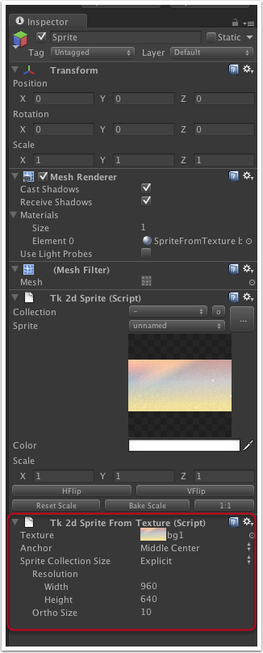

Documentation
Script Reference
Forum
Documentation
Script Reference
Forum
Use this script when you are absolutely sure yours sprite will not be atlased. Eg. a big background that will only exist in a single level.

Texture - Drag in a texture into this slot to replace the texture used.
Anchor - The anchor point of the sprite.
Sprite Collection Size - The settings used to determine the physical size of the sprite. It is advisible to use the same settings as the rest of your sprites in your game here.